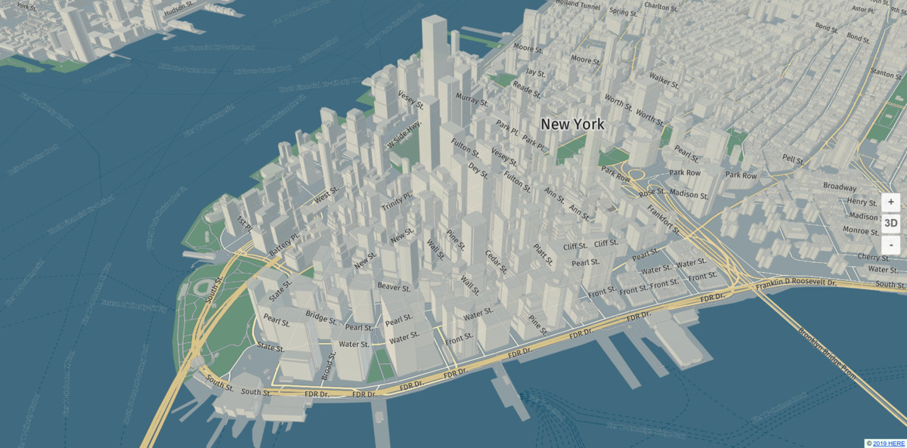

harp.gl


harp.gl is an experimental and work in progress open-source 3D map rendering engine written in TypeScript.
harp.gl site
harp.gl Slack channel Registration available here.
Overview
You can use this engine to:
- Develop visually appealing 3D maps
- Create highly animated and dynamic map visualization with WebGL, using the popular three.js library.
- Create themeable maps, with themes that can change on the fly.
- Create a smooth map experience with highly performant map rendering and decoding. Web workers parallelize the CPU intensive tasks, for optimal responsiveness.
- Design your maps modularly, where you can swap out modules and data providers as required.
With that in mind, we have included some modules that let's you get started with some simple web applications that can display a map using our default style. You can get results like the one shown below:

Getting started with harp.gl
There are three methods to get up and running with harp.gl quickly, in order of difficulty:
- Using the yeoman generator.
- linking a simple bundle as a
<script>tag in your html - installing a set of node modules from npm
If you want to learn more about the applications you can create, please check the Getting Started Guide.
Authentication
Regardless of how you structure your project, you need some means to authenticate, please see the following guide to generate a token.
About This Repository
This repository is a monorepo containing the core components of harp.gl,
organized in a yarn workspace.
All components can be used stand-alone and are in the @here subdirectory.
Installation
In Node.js
All harp.gl modules are installable via yarn (or npm):
yarn add @here/harp-mapviewnpm install @here/harp-mapviewIn Browser
Since harp.gl consists of a set of modules, there are no ready-made bundles available. Take a look at the examples on information on how to use tools like webpack to create a bundle for the browser.
Development
Prerequisites
- Node.js - Please see nodejs.org for installation instructions
- Yarn - Please see yarnpkg.com for installation instructions.
Download dependencies
Run:
yarn installto download and install all required packages and set up the yarn workspace.
Launch development server for harp.gl examples
Run:
yarn startTo launch webpack-dev-server. Open http://localhost:8080/ in your favorite browser.
Launch development server for unit tests
Run:
yarn start-testsOpen http://localhost:8080/ in your favorite browser to run the tests.
Run unit & integration tests in Browser environment
Run:
yarn run start-tests
>: Project is running at http://localhost:8080/Note the URL and invoke tests using mocha-webdriver-runner. Example:
npx mocha-webdriver-runner http://localhost:8081/ --chrome
npx mocha-webdriver-runner http://localhost:8081/ --headless-firefoxRun performance tests in Node.js environment
As for now, there is no baseline for performance tests results, so before examining performance one have to establish baseline:
Performance test steps
- Establish baseline results.
$ git checkout master
PROFILEHELPER_COMMAND=baseline yarn performance-test-node # create baseline of measurements for your particular platformNote, that performance test suite is very limited, so it is highly possible that you have to write new dedicated performance test for code that is about to be optimized. See
tests/performancefor examples.
Go back to your branch, change stuff and
Rerun tests with your changes
yarn performance-test-node --grep lines # assuming you're playing with lines- Examine output:
...
performance createLineGeometry segments=2
min=0.0014ms (-2.44% vs 0.0014ms) sum=999.16ms (0% vs 999.12ms) repeats=499568.00 (-6.47% vs 534131.00) throughput=499988.43/s (-6.47% vs 534600.13/s)
avg=0.002ms (6.92% vs 0.0019ms) med=0.0015ms (0.2% vs 0.0015ms) med95=0.0031ms (17.6% vs 0.0026ms)
gcTime=39.6195ms (-3.39% vs 41.011ms) sumNoGc=959.54ms (0.15% vs 958.11ms) throughputNoGc=520633.00/s (-6.61% vs 557461.83/s)Debug Tests with VSCode
Run
yarn test-debugAdd and start this configuration to your launch.json :
{
"type": "chrome",
"request": "attach",
"name": "Karma Tests",
"sourceMaps": true,
"webRoot": "${workspaceRoot}/test",
"address": "localhost",
"port": 9333,
"pathMapping": {
"/": "${workspaceRoot}",
"/base/": "${workspaceRoot}/"
},
"sourceMapPathOverrides": {
"webpack:///./*": "${webRoot}/*",
"webpack:///src/*": "${webRoot}/*",
"webpack:///*": "*",
"webpack:///./~/*": "${webRoot}/node_modules/*",
"meteor://app/*": "${webRoot}/*"
}
}Generate documentation
Run:
yarn run typedocIt will output all documentation under /dist/doc.
License
Copyright (C) 2017-2021 HERE Europe B.V.
See the LICENSE file in the root of this project for license details about using harp.gl.
In addition, please note that the fonts are under a different set of licenses.
For other use cases not listed in the license terms, please contact us.